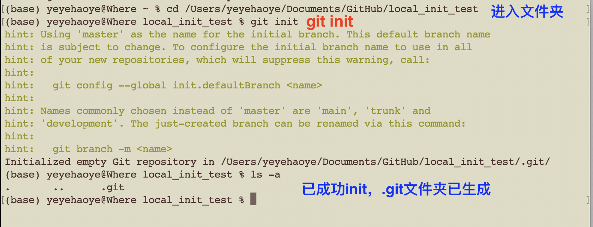
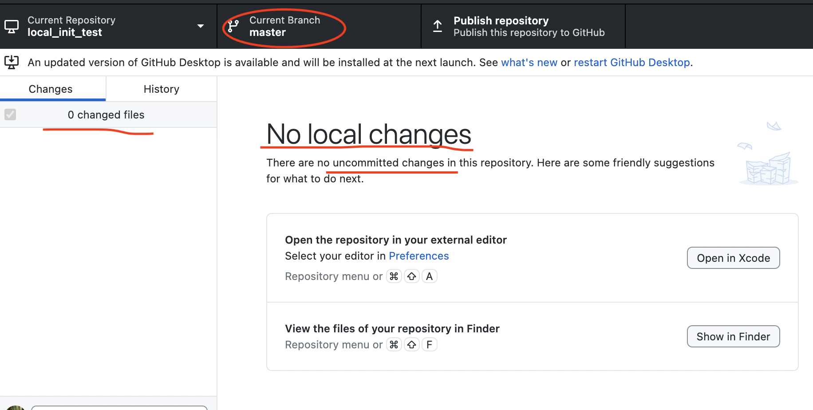
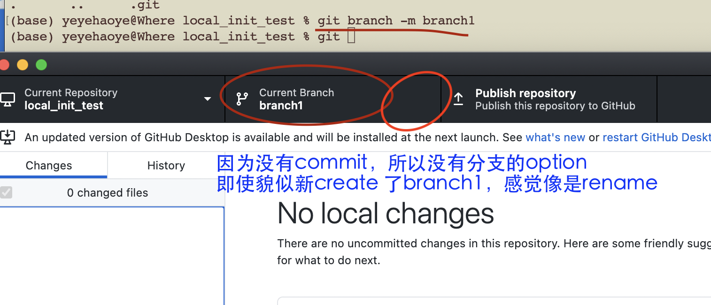
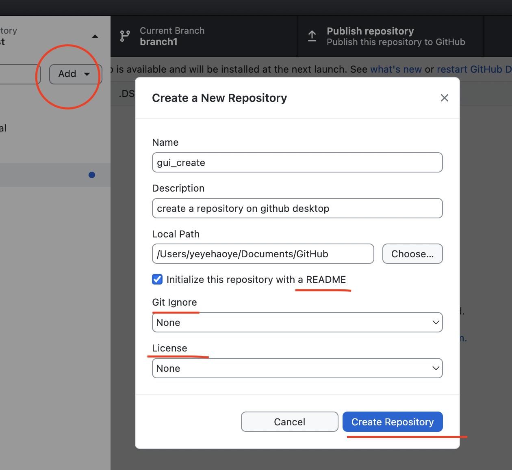
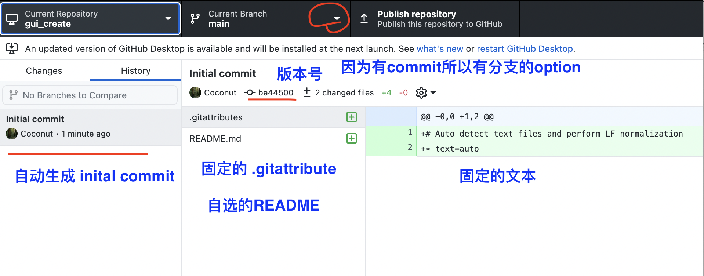
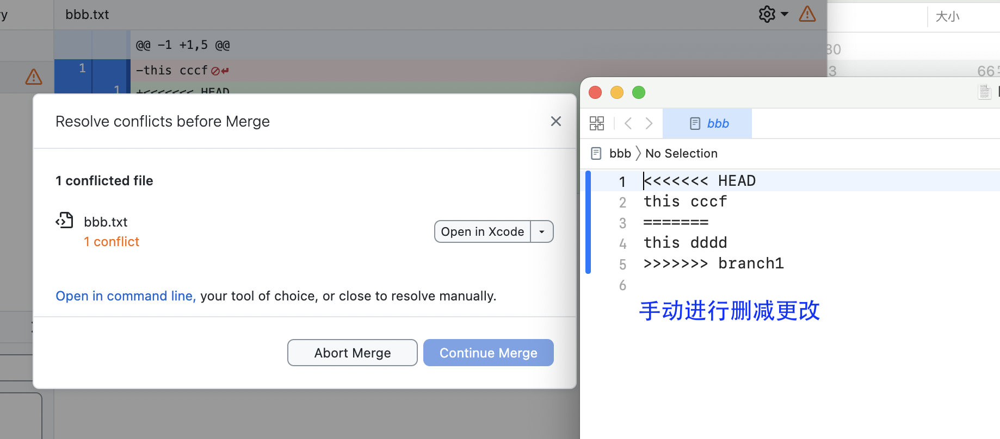
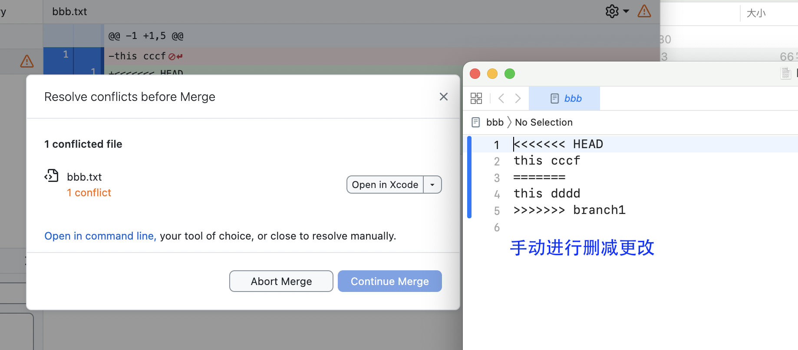

Git
Background

软件配置管理, Software Contiguration Management,SCM
通过执行版本控制、变更控制的规程，以及使用合适的配置管理软件，来保证所有配置项的完整性和可跟踪性。配置管理是对工作成果(源码文件、需求文档、设计文档，开发文档)的一种有效保护。
是放在中央服务器上，每次只能由一个人去锁定服务器文件的去用
| - doc-level锁，
- row-level锁，后者就是需要提前分配好行数，然后进行比对合并，提高了多人协作水平。如果是同样对一行，那也没辙，那也只能是锁住不给别人用），在锁定期间其他人是不能进行修改的，只能查看。
一旦服务器发生故障或者损坏，就会丢失
|
- Git Bash
- Github Desktop 【
- sourcetree
mac
zsh
把如下代码添加至你的 ~/.zshrc 文件中，就可以在右侧显示分支名称
| autoload -Uz vcs_info
precmd_vcs_info() { vcs_info }
precmd_functions+=( precmd_vcs_info )
setopt prompt_subst
RPROMPT=\$vcs_info_msg_0_
# PROMPT=\$vcs_info_msg_0_'%# '
zstyle ':vcs_info:git:*' formats '%b'
|
工作流程原理
四大区域
details
git command
初始化
本地新建一个 local init
git init
| mkdir local_init
cd local_init
git init
ls
|
此时就会出现一个 .git 的隐藏 directory，这就是 local repository。
以后所有的 git 操作历史提交记录信息全都在此, 只要这个文件夹还存在, 就可以记住我们所有的 git 操作。

在 local init 新建的 repository 是没有任何的提交文件，所以也没有 default 的 branch 文件。
- heads directory 里没有文件，哪怕 HEAD 里指向 main 或者master。
- objects directory 里没有文件，因为没有版本。
- 所以用
git branch -m branch1 也没有用，因为head里依旧没有文件。



GUI init

除了 local init 里的东西，还会自动 initial commit
- 生成
.git, .gitattribute
- 可以自选要不要带上
readme.md
- heads directory 里有文件，是 default branch (main 或者 master，自己设)，里面指向的就是 initial commit 的版本文件
- objects directory 有文件，包括 initial commit 这个版本文件
- 所以用
git branch -m branch1 就有用，而且可以选择branch。

git config 配置
| # 1. usrname
git config --global user.name "yourUserName"
# 2. useremail
git config --gloabl user.email "yourEmail"
# 3. 没有 `global` 只对当前仓库生效
|
| # 1. 针对当前仓库
$ git config -e
# 2. 针对 local 所有仓库
$ git config -e --global
|
日常操作
提交代码
基本流程
-
working dir -> staging area
git add
| # 1. 该命令可以将文件添加到暂存区
$ git add [file1] [file2] ...
# 2. 添加指定目录到暂存区
$ git add [dir]
# 3. 添加当前目录下所有文件进入暂存区
$ git add .
# 4. 添加当前目录下特定格式进入暂存区.
$ git add *.py
|
-
staging area -> local repository
git commit -m <message>
-
local respository -> remote
git push origin <local_branch> : <remote_branch>
origin :local_branch working dir 的 branchremote_branch 你要 push 的那个 repository 的那个 branch
一些过程中可能用到的查看指令

一些操作
-
删除文件
git rm
| # 1. 将文件从暂存区和工作区中删除
# 可以加上 -f, 表示强制删除之前修改过而且 add 到暂存区的文件
$ git rm [-f] <file>
# 2. 将文件从暂存区删除，在工作区保留
$ git rm --cached <file>
|
分支操作
- 查看分支
git branch -a
- 创建新分支
git checkout -b <new_branch>
| # 1. 创建分支,注意新分支创建后不会自动切换为当前分支
$ git branch <new_branch>
# 2. 基于当前分支创建一个新分支,并进行切换
$ git checkout -b <new_branch>
# 3. 基于指定分支创建一个新的分支,并进行切换
$ git checkout -b <new_branch> <given_brach>
# 4. 创建远程分支(本地分支push到远程)：
$ git push origin <remote_branch>
|

-
切换分支 git checkout
| # 1. 切换分支
$ git checkout <branch>
# 2. 切换到上一个分支
$ git checkout -
# 3. 切换 commit version
$ git log # 查看版本号
$ git checkout <SHA>
|
Git 切换分支
- 删除分支
| # 1. local : 只能删除已经参与了合并的分支，对于未有合并的分支是无法删除的
$ git branch -d <local_branch>
# 2. local : 想强制删除一个分支
$ git branch -D <local_branch>
# 3. 删除远程分支
$ git push origin :heads/<_remote_branch>
|
4.3 更新操作
@TODO
合并操作
- 先切换到要合并的主分支
git checkout master
- 选择要合并的另外一个 branch
`git merge
合并冲突
合并代码出现冲突提示。 这个时候不可以进行任何分支切换和commit操作，需要按照提示将冲突解决。
| # 冲突提示
Auto-merging README.md
CONFLICT (content): Merge conflict in README.md
Automatic merge failed; fix conflicts and then commit the result.
|
 

-
查看冲突文件内容
| $ vim README.md
1111
2222
<<<<<<< HEAD
3333
=======
3344
>>>>>>> feature/hotfix-002
|
-
从 <<<<<<< HEAD 开始, 到 ======= 都是主分支已经存在的内容。
-
从 ======= 开始, 到 >>>>>>> branch 都是 merge 过来的分支的内容。
-
解决冲突，视情况保留(删除)记录
- 冲突解决完成之后, 再次提交代码
git commit
暂存代码保护现场
项目经理提了一个新的需求, 开发就需要从 master 分支迁出一个新的分支进行功能开发(例如迁出新分支为dev), 如果在开发过程中生产上有紧急 bug 需要修复, 就可以用到 git stash 了。
这种情况一般是出现在你正在完成一个功能，但是忽然线上发现了一个Bug，必须马上开一个新的分支来修复bug，但是现在的功能没写完不打算提交(commit)，现在怎么办？？
为什么要暂存，而不用直接在自己的 local repository commit
commit 需要写 message。一般 message 都是写 “完成xx功能，修改xx功能”， 如果这样写但是其实做到一半就会有歧义。如果不这样写，交代自己的工作进度，也行。但是一旦 push 的话就会把该 branch 的所有 commit 都 push 到 shared repository。那么 messages 都 public 了。
git stash 可以将现在的 工作区全部的修改、新增、删除等操作，全部保存起来。
git stash 的常用命令:
git stash save 'save message': 执行存储时, 添加备注, 方便查找, 当然只执行 git stash 也是可以的, 但查找时不方便。git stash list: 查看 stash 了哪些存储。git stash show: 显示做了哪些改动, 默认 show 第一个存储, 如果要显示其他的存储, 后面加 stash@{$num}, 比如第二个: git stash show stash@{1}git stast show -p: 显示第一个存储的改动, 如果想显示其他存储, 则: git stash show stash@{$num} -p, 比如第二个: git stash show stash@{1} -pgit stash apply: 应用某个存储, 但不会把存储从存储列表中删除, 默认使用第一个存储, 即 stash@{0}, 如果要是用其他, 则: git stash apply stash@{$num}, 比如第二个: git stash apply stash@{1}git stash pop: 恢复之前缓存的工作目录, 将缓存列表中对应的 stash 删除, 并将对应修改应用到当前的工作目录下, 默认为第一个 stash, 即 stash@{0}, 如果要应用并删除其他 stash, 则: git stash pop stash@{$num}, 比如应用并删除第二个: git stash pop stash@{1}git stash drop stash@{num}: 丢弃 stash@{num} 存储, 从列表中删除这个存储git stash clear: 删除所有缓存的 stash
开始模拟现场
| # git 初始化
$ cd .. && rm -rf git-study && mkdir git-study && cd git-study && git init
$ echo 'file1 init' > file1.txt
$ echo 'file2 init' > file2.txt
$ git add .
$ git commit -m 'change: add file1 & file2'
[master (root-commit) 525c358] change: add file1 & file2
2 files changed, 2 insertions(+)
create mode 100644 file1.txt
create mode 100644 file2.txt
# 然后从 master 分支创建两个新的 feature 分支
$ git branch feature1
$ git branch feature2
# checkout feature1, 修改 file1.txt, 并在 feature1 上创建两次提交
$ git checkout feature1
$ echo 'add file1.txt code 1' >> file1.txt
$ git add file1.txt
$ git commit -m 'change file1 no.1'
$ echo 'add file2.txt code 2' >> file1.txt
$ git add file1.txt
$ git commit -m 'change file1 no.2'
# 目前 feature1 上的改动内容
$ cat file1.txt
file1 init
add file1.txt code 1
add file2.txt code 2
$ cat file2.txt
file2 init
# checkout feature2, 修改 file2.tx
$ git checkout feature2
$ echo 'add file2.txt code 1' >> file2.txt
$ git add file2.txt
$ git commit -m 'change file2 no.1'
# 目前 feature2 上的改动内容
$ cat file1.txt
file1 init
$ cat file2.txt
file2 init
add file2.txt code 1
# 假设不小心将 feature2 合并到了 feature1, 并在 feature1 继续进行了代码开发并提交
$ git checkout feature1
$ git merge feature2
$ echo 'add file1.txt no.3 & code end' >> file1.txt
$ git add file1.txt
$ git commit -m 'change file1 no.3'
# 此时 feature1 上所有文件的内容
$ cat file1.txt
file1 init
add file1.txt code 1
add file2.txt code 2
add file1.txt no.3 & code end
$ cat file2.txt
file2 init
add file2.txt code 1
# 此时我们发现了不小心 merge 进来的 feature2, 而且在这基础上我们还有新的 commit, 如果我们想将 merge 剔除, 可以做如下操作
# 先查看需要还原 commit 的版本号
$ git log --oneline
8a1454f (HEAD -> feature1) change file1 no.3
422a454 Merge branch 'feature2' into feature1
4978e2c (feature2) change file2 no.1
ee4a50e change file1 no.2
dc397c1 change file1 no.1
525c358 (master) change: add file1 & file2
# 其中, 422a454 就是误合并的 commitid
# 目前我们需要做的就是撤销已提交的 commit, 回滚到 feature2 误合并到 feature1 分支的 commit 版本。
$ git reset --mixed 422a454
Unstaged changes after reset:
M file1.txt
$ git log --oneline
422a454 (HEAD -> feature1) Merge branch 'feature2' into feature1
4978e2c (feature2) change file2 no.1
ee4a50e change file1 no.2
dc397c1 change file1 no.1
525c358 (master) change: add file1 & file2
$ git diff file1.txt
diff --git a/file1.txt b/file1.txt
index 4a1ca46..6954af7 100644
--- a/file1.txt
+++ b/file1.txt
@@ -1,3 +1,4 @@
file1 init
add file1.txt code 1
add file2.txt code 2
+add file1.txt no.3 & code end ## 可以看见, feature1 最后一次提交已经是未暂存状态了
# 此时, 我们就可以使用 git stash, 将撤销的代码存储起来,
$ git stash save 'save file1.txt reset code'
Saved working directory and index state On feature1: save file1.txt reset code
# 查看 stash 列表
$ git stash list
stash@{0}: On feature1: save file1.txt reset code
# 查看 status, 可以看见在工作空间已经没有了
$ git status
On branch feature1
nothing to commit, working tree clean
# 然后再撤销 merge 相关的信息
$ git reset --hard HEAD~
# 再查看此时本地的文件内容
$ cat file1.txt
file1 init
add file1.txt code 1
add file2.txt code 2
$ cat file2.txt
file2 init
# 接下来恢复 feature1 上被撤销的代码
$ git stash list
stash@{0}: On feature1: save file1.txt reset code
$ git stash apply stash{0}
On branch feature1
Changes not staged for commit:
(use "git add <file>..." to update what will be committed)
(use "git restore <file>..." to discard changes in working directory)
modified: file1.txt
no changes added to commit (use "git add" and/or "git commit -a")
# 此时代码就恢复回来了
$ cat file1.txt
file1 init
add file1.txt code 1
add file2.txt code 2
add file1.txt no.3 & code end
|
说明: git stash会贮存及不会贮存的文件范围
- 会贮存:
- 添加到暂存区的修改（staged changes）
- git跟踪的但并未添加到暂存区的修改（unstaged changes）
- 不会贮存:
- 在工作目录中新的文件（untracked files）
- 被忽略的文件（ignored files）
当然, 如果仅仅需要 删除某个 commit, 其实有更好的方法
| # 假设, 当前已经到了 git commit -m 'change file1 no.3', 当前 log
$ git log
commit 3e6be928866581f1779bb0f0e84d29d068d698e8 (HEAD -> feature1)
Author: kino <kino@gmail.com>
Date: Thu Nov 24 23:30:31 2022 +0800
change file1 no.3
commit ef733ffec4e80ed851f353f2d8b2dba46b831bb6
Merge: 5e96765 7d9cebd
Author: kino <kino@gmail.com>
Date: Thu Nov 24 23:30:29 2022 +0800
Merge branch 'feature2' into feature1
...
# 我们可以直接 git revert 指定的 commit, 例如 上面 merge 的 commit id 是 ef733ffec4e80ed851f353f2d8b2dba46b831bb6
$ git revert -i ef733ffec4e80ed851f353f2d8b2dba46b831bb6 -m 1
# 注意, 已经要加上 -m 1, 否则会报如下错:
# error: commit ef733ffec4e80ed851f353f2d8b2dba46b831bb6 is a merge but no -m option was given.
# fatal: revert failed
# 在这里解释下 -m 1 的含义:
# 从上面的 git log 可以看见 "Merge: 5e96765 7d9cebd" 的信息, 这代表着, 本次 merge 是使用当前分支的 5e96765(commit) 和 feature2 分支的 7d9cebd(commit) 合并而来, 我们可以做一下验证:
# # 首先 cat-file 5e96765
# $ git cat-file -p 5e96765
# tree fa6ff2fd55be9834b45f0be9d347b1670594ed17
# parent d27c172b6e876938eb39094801ca5e436a30b3c3
# author kino <kino@gmail.com> 1669303829 +0800
# committer kino <kino@gmail.com> 1669303829 +0800
# change file1 no.2
# # 然后取 tree 的 id 继续查看, 可以看到, 这个 tree 记录该 commit 的两个文件
# $ git cat-file -p fa6ff2fd55be9834b45f0be9d347b1670594ed17
# 100644 blob 4a1ca461271ec4e0041822373470703dca5d0626 file1.txt
# 100644 blob 18ffc0add953f06f00be32437b9f79e09af27d32 file2.txt
# # 然后取 file2.txt 的 id 继续查看, 可以看到, 这个 tree 记录 该 file2.txt 的内容为: file2 init
# $ git cat-file -p 18ffc0add953f06f00be32437b9f79e09af27d32
# file2 init
# # 然后我们再 cat-file 7d9cebd
# tree 1b5c42acd113046ec223223affe7b3ef579a293b
# parent 9acd7882175075c0f3e2f44dfa0d91f3d0a673d1
# author kino <kino@gmail.com> 1669303829 +0800
# committer kino <kino@gmail.com> 1669303829 +0800
# change file2 no.1
# # 然后取 tree 的 id 继续查看, 可以看到, 这个 tree 记录该 commit 的两个文件
# git cat-file -p 1b5c42acd113046ec223223affe7b3ef579a293b
# 100644 blob 0c481f7fe4602d041634c353e31846bf1b638c37 file1.txt
# 100644 blob c6b0b29e598db81ef8e54ec955df78cfac4ae316 file2.txt
# # 然后取 file2.txt 的 id 继续查看, 可以看到, 这个 tree 记录 该 file2.txt 的内容
# git cat-file -p c6b0b29e598db81ef8e54ec955df78cfac4ae316
# file2 init
# add file2.txt code 1
# 由此我们可以得出结论, 5e96765 就是 feature1 在 Merge 之前的状态, 而 7d9cebd 就是 feature2 在 Merge 之前的状态。
# 因为 一个 Merge 记录了两个分支的 commit 信息, 所以, 在 revert merge 的时候,需要明确的支出, 要revert 到哪个commit, 因为我们是想取消 feature2 里面的内容, 所以就是 -m 1
# ok, 回到正题, git revert 之后, 我们再查看 log
$ git log --oneline
b4dde93 (HEAD -> feature1) Revert "Merge branch 'feature2' into feature1"
3e6be92 change file1 no.3
ef733ff Merge branch 'feature2' into feature1
5e96765 change file1 no.2
7d9cebd (feature2) change file2 no.1
d27c172 change file1 no.1
9acd788 (master) change: add file1 & file2
# 然后查看 file2.txt
$ cat file2.txt
file2 init
|
五、git 高级操作
5.1 git 撤销操作
disk:
| command |
description |
| 查看修改 |
git diff |
| 查看状态 |
git status -> Changes not staged for comit |
| 撤销文件修改 |
git checkout <change_file> or git restore <change_file> |
| 提交暂存区 |
git add |
暂存区:
| command |
description |
| 查看状态 |
git status -> Changes to be committed(绿色) |
| 从暂存区移除，但保留硬盘上的修改 |
git reset <change_file> or git restore --staged <change_file> |
| 从暂存区移除，不保留硬盘上的修改 |
git checkout HEAD <change_file> |
| 提交本地git |
git commit |
local:
| command |
description |
| 撤销commit(保留磁盘上的修改和暂存区记录) |
git reset --soft HEAD~1 |
| 撤销commit(清除暂存区记录, 只保留磁盘上的修改) |
git reset HEAD~1 == git reset --mixed HEAS~1 |
| 撤销commit(清除暂存区记录, 清除磁盘上的修改) |
git reset --hard HEAD~1 |
生成新的commitId,将上一个commit+的内容变成commit- |
git revert HEAD |
| 提交远端git |
git push |
git reset & git revert:
git reset: 只能回到之前某一个commit的状态。git revert:撤销中间任意一个commit。git revert 70a0;(git revert HEAD~1)
如果操作项目的分支是公共分支，只能通过 git revert 生成一个新的 commitId，从这个结果上撤销我们之前的修改。
git revert HEADgit push
如果操作项目的分支是个人分支，可以通过git reset撤销我们之前的修改
git reset --hard HEAD~1git push -f
5.2 git 找回丢失文件(commit了)
恢复因为执行 git reset --hard COMMITID 丢失的文件
| # 重新创建一个项目
$ cd .. && rm -rf git-study && mkdir git-study && cd git-study && git init
$ echo 'master message 1' >> master_1.txt
$ git add master_1.txt
$ git commit -m 'first commit'
$ echo 'master message 2' >> master_2.txt
$ git add master_2.txt
$ git commit -m 'No.2 commit'
# 在这两次commit的基础上, reset 到第一次(first commit)上
$ git log # 获取第一次commitid
$ git reset --hard 4a9bcb880db85a1ca77807dea9b3adce29dc4fda
# 再次查看 log 信息, 此时可以看见只有一次commit了, 第二次 commit(No.2 commit) 已经丢失
$ git log -n 2
|
git 提供了 git reflog 用来记录你的每一次改变目录树的命令，使用好他就可以很方便的恢复你的提交：
| 4a9bcb8 (HEAD -> master) HEAD@{0}: reset: moving to 4a9bcb880db85a1ca77807dea9b3adce29dc4fda
80258ce HEAD@{1}: commit: No.2 commit
4a9bcb8 (HEAD -> master) HEAD@{2}: commit (initial): first commit
|
可以看到最上面一条记录是将 HEAD 重新指向第一次的commit了, 同时也有显示第二次 commit 的 commitid, 有了这个 commitid, 就可以回滚了。
| $ git reset --hard 80258ce
HEAD is now at 80258ce No.2 commit
$ git log
commit 80258ce0146f373d15a1991d61af4061687782bc (HEAD -> master)
Author: kino <kino@gmail.com>
Date: Thu Nov 24 02:26:10 2022 +0800
No.2 commit
commit 4a9bcb880db85a1ca77807dea9b3adce29dc4fda
Author: kino <kino@gmail.com>
Date: Thu Nov 24 02:25:06 2022 +0800
first commit
|
可以看到, commit 已被找回.
但是通常情况下, 可能会出现在 git reset 之后, 还有新的 commit, 如果直接 reset 恢复的 commit, 肯定会造成新的 commit 又丢失, 所以如果我们只是想恢复这个一个 commit, 可以使用 git cherry-pick commitid 来单独将这个 commitid 恢复到当前分支或者用 git merge 来做合并
| $ git cherry-pick 04b0396
[master fbf401a] No.2 commit
Date: Thu Nov 24 02:38:14 2022 +0800
1 file changed, 1 insertion(+)
create mode 100644 master_2.txt
$ git log
commit fbf401a96bd9831c18ed02e9ee852cef8111ccb1 (HEAD -> master)
Author: kino <kino@gmail.com>
Date: Thu Nov 24 02:38:14 2022 +0800
No.2 commit
commit 1b5bfdb36ad01fb86d94b76654347f5de5475f37
Author: kino <kino@gmail.com>
Date: Thu Nov 24 02:38:05 2022 +0800
first commit
|
5.3 git 找回丢失文件(未commit,但添加暂存区了)
如果只 git add 了没有 git commit(如果连 git add都没有, 那只能找磁盘数据恢复的方式了), 这就不是仅仅一个 git reflog 就能找回的了。
| $ cd .. && rm -rf git-study && mkdir git-study && cd git-study && git init
$ echo 'master message 1' >> master_1.txt
$ git add master_1.txt
$ git commit -m 'first commit'
$ echo 'master message 2' >> master_2.txt
$ git add master_2.txt
$ git commit -m 'No.2 commit'
$ echo 'master message 3' >> master_3.txt
$ git add .
# 查看 log
$ git log -n 2
# 取最新的一次 commit id
$ git reset --hard ee614a48f753479a111723ae7ad926e0750ffa6c
# 查看 status
$ git status
On branch master
nothing to commit, working tree clean
# 查看本地文件
total 16
-rw-r--r-- 1 kino staff 17B 11 24 02:43 master_1.txt
-rw-r--r-- 1 kino staff 17B 11 24 02:43 master_2.txt
# 可以看见文件已经丢了
|
git 提供了 git fsck --lost-found 命令, 他会通过一些神奇的方式把历史操作过的文件以某种算法算出来加到.git/lost-found文件夹里，输出的记录就像下面这个样子。
| ❯ git fsck --lost-found
Checking object directories: 100% (256/256), done.
dangling blob adbd4c8bf64367fb685336a67f02c5716dc47d73
|
这里返回的第一行带有 blob 的信息，我们可以用 git show来查看里面的内容
| $ git show adbd4c8bf64367fb685336a67f02c5716dc47d73
master message 3
# 比如可以将内容追加到新文件中
$ git show adbd4c8bf64367fb685336a67f02c5716dc47d73 > master_3.txt
|
小记: 如果你的提交记录多的话, git fsck --lost-found 可以看见很多内容, 如下
| $ git fsck --lost-found
Checking object directories: 100% (256/256), done.
Checking objects: 100% (35559/35559), done.
dangling blob 601e8abff177a0b2f8a31944654c0cdf0dd1f197
dangling tree 6c247c35ae51aa86736f745802bb59b97b6598ee
dangling blob 7a379e6f07391f3bca1fbcc076fcde8f719ffb69
dangling blob c66fa02bf74853789b63615a80998b3fbd3d8823
dangling blob 4996ec43a907f8f6312c3bf137e2f76c7f4c9c9c
dangling commit 69a110054ca792e6b1060d20ec24ddc9710ada4d
dangling blob 87ed1263b56d0a98cd163440f872f135a34b61da
dangling blob aff0bc224d142929e3f82b8855dd1e97d8b3635b
dangling blob eef114f8614a15a11ccfbb7cf5e34302072176e1
dangling blob b50db5dad43e13fde45141039f684be48e293739
dangling blob 820f0136b61394e482fd18e28a7ba81fbb31f688
dangling blob 2d26cd809139b86218d3460c85baed90d018f007
dangling blob 603ca9d770947939d8da7ff3aef3775bb27c427e
dangling blob e54821ed942c6582d01f60b6715e16301cdcfc4d
dangling blob e06be73bb272c7837ab38226c1c1bb13f845574e
dangling blob 399aede4e687465bf7c895251bef685b0de089b6
dangling blob 5ea2239d63a9a119a54a52fde6ebf208a940832a
dangling blob 35ab95c7faf42b7dbbf4e0992527c719ffd4acbd
dangling blob 9bb609de693b78eb1dc0e3dca7a9d684effd3f4a
dangling blob aac499592477199b2630791aecde2db8a608dfa9
dangling commit 10c581dcdf08ea1bed594a359e09698afd4f794e
dangling blob 06eb7790a9f71bf796749940102030c6e9503022
|
可以看到这里有blob、commit、tree类型的数据，其实还有tag等类型的, 这里需要了解下 git 的底层存储
commit 数据结构在每次提交之后都会生成一个, 当我们进行 commit 之后, 首先会创建一个 commit 组件, 之后创建一个 tree 组件, 把所有的文件信息都存在里面, 每个 blob 都代表一个文件, 都可以在 tree 里面找到。blob 组件并不会对文件信息进行存储, 而是只对文件的内容进行记录, 文件信息存储在 tree 里.
5.4 终极大招
如果 5.3 并没有找到你想要的内容, 那只能再去看看最近修改的文件了
| $ find .git/objects -type f | xargs ls -lt | sed 3q
-r--r--r-- 1 kino staff 33 11 24 02:43 .git/objects/ad/bd4c8bf64367fb685336a67f02c5716dc47d73
-r--r--r-- 1 kino staff 33 11 24 02:43 .git/objects/cc/6e4eeea4f70e784fade7a18bdba6c28f7642e8
-r--r--r-- 1 kino staff 33 11 24 02:43 .git/objects/24/b6cb352efeff7a2b24b99e8ff814ab1fc2a2fd
|
使用 git cat-file -t commitid 可以看见是什么类型的
| $ git cat-file -t adbd4c8bf64367fb685336a67f02c5716dc47d73
blob
$ git cat-file -t cc6e4eeea4f70e784fade7a18bdba6c28f7642e8
blob
$ git cat-file -t 24b6cb352efeff7a2b24b99e8ff814ab1fc2a2fd
blob
|
再使用 git cat-file -p commitid 查看内容
| $ git cat-file -p adbd4c8bf64367fb685336a67f02c5716dc47d73
master message 3
$ git cat-file -p cc6e4eeea4f70e784fade7a18bdba6c28f7642e8
master message 2
$ git cat-file -p 24b6cb352efeff7a2b24b99e8ff814ab1fc2a2fd
master message 1
|
5.5 git 迁移(保留 commit)
5.5.1 clone 原来的项目
| git clone --bare git://github.com/username/project.git
|
5.5.2 推送到新的gitlab
| cd project
git push --mirror git@example.com/username/newproject.git
|
会提示没有权限, 在gitlab中把项目的权限保护关掉就好了
5.5.3 本地代码更换gitlab地址
| git remote set-url origin git@example.com/username/newproject.git
|
5.6 git rebase
准备4个场景:
- merge 时只有一个分支变更
- merge 时两个分支有变更
- rebase 时只有一个分支变更
- rebase 时两个分支有变更
5.6.1 merge 时只有一个分支变更
| rm -rf first-project && mkdir first-project && cd first-project
git init
echo "c0" >> README.md
git add README.md
git commit -m "init"
## 创建一个分支
git checkout -b feature
## 在 master 上添加两个 commit
git checkout main
echo "c1" >> README.md
git add README.md
git commit -m "c1 commit"
echo "c2" >> README.md
git add README.md
git commit -m "c2 commit"
## feature 合并 master 新增记录
git checkout feature
git merge main
## 查看日志, 可以看见 feature 分支上已经有了 master 的两个提交了
git log --graph --pretty=oneline --abbrev-commit
* c001f6f (HEAD -> feature, main) c2 commit
* a4d98be c1 commit
* 7171bfa init
cat README.md
c0
c1
c2
|
5.6.2 merge 时两个分支有变更
| rm -rf first-project && mkdir first-project && cd first-project
git init
echo "c0" >> README.md
git add README.md
git commit -m "init"
## 创建两个分支
git checkout -b feature1
git checkout -b feature2
## 在 feature1 上添加两个 commit
git checkout feature1
echo "c1" >> README.md
git add README.md
git commit -m "c1 commit"
echo "c2" >> README.md
git add README.md
git commit -m "c2 commit"
## 在 feature2 上添加两个 commit
git checkout feature2
echo "c3" >> README.md
git add README.md
git commit -m "c3 commit"
echo "c4" >> README.md
git add README.md
git commit -m "c4 commit"
## 在 feature1 上添加一个 commit
git checkout feature1
echo "c5" >> README.md
git add README.md
git commit -m "c5 commit"
## 查看两个分支的commit时间
git log feature1
commit a16e20a00329b0a60cbf8f541ff999e065a907b0 (HEAD -> feature1)
Author: kino <kinoxyz1@gmail.com>
Date: Thu Apr 6 23:17:13 2023 +0800
c5 commit
commit bddb67864d6a8e5923618564304090a869dedf68
Author: kino <kinoxyz1@gmail.com>
Date: Thu Apr 6 23:17:02 2023 +0800
c2 commit
commit 4a0978f9892241abd481251ed96f5a7b92199011
Author: kino <kinoxyz1@gmail.com>
Date: Thu Apr 6 23:16:58 2023 +0800
c1 commit
commit cde011b84e70d5dfbd966b91f5d9ab0aeefff25a (master)
Author: kino <kinoxyz1@gmail.com>
Date: Thu Apr 6 23:16:49 2023 +0800
init
git log feature2
commit 02f337014fa6acbdcbcf79d4ecd6668cdd37d6cb (feature2)
Author: kino <kinoxyz1@gmail.com>
Date: Thu Apr 6 23:17:09 2023 +0800
c4 commit
commit e4567ef53ad207ea88cc042140183f8e047a5b69
Author: kino <kinoxyz1@gmail.com>
Date: Thu Apr 6 23:17:06 2023 +0800
c3 commit
commit cde011b84e70d5dfbd966b91f5d9ab0aeefff25a (master)
Author: kino <kinoxyz1@gmail.com>
Date: Thu Apr 6 23:16:49 2023 +0800
init
## 可以看见, feature2 上的两个 commit 时间晚于 feature1 的 c2/c3 commit, 但是又早于 feature1 上的 c5 commit
## 现在将 feature1 合并到 feature2
git checkout feature2
git merge feature1
## 冲突提示
Already on 'feature2'
Auto-merging README.md
CONFLICT (content): Merge conflict in README.md
Automatic merge failed; fix conflicts and then commit the result.
## 解决冲突
vim README.md
git add .
git commit
## 再次查看feature2的提交记录, 发现多出来了一个 commit:faaa86d914cce98ab6dd6159ff76a4fe351f809e
## 并且时间顺序是按两个分支的时间排好序的(合并后时间有序未被打乱)
commit 6f9869531606418e4c40fabb9cfaabfa1425545a (HEAD -> feature2)
Merge: 02f3370 a16e20a
Author: kino <kinoxyz1@gmail.com>
Date: Thu Apr 6 23:20:13 2023 +0800
Merge branch 'feature1' into feature2
commit a16e20a00329b0a60cbf8f541ff999e065a907b0 (feature1)
Author: kino <kinoxyz1@gmail.com>
Date: Thu Apr 6 23:17:13 2023 +0800
c5 commit
commit 02f337014fa6acbdcbcf79d4ecd6668cdd37d6cb
Author: kino <kinoxyz1@gmail.com>
Date: Thu Apr 6 23:17:09 2023 +0800
c4 commit
commit e4567ef53ad207ea88cc042140183f8e047a5b69
Author: kino <kinoxyz1@gmail.com>
Date: Thu Apr 6 23:17:06 2023 +0800
c3 commit
commit bddb67864d6a8e5923618564304090a869dedf68
Author: kino <kinoxyz1@gmail.com>
Date: Thu Apr 6 23:17:02 2023 +0800
c2 commit
commit 4a0978f9892241abd481251ed96f5a7b92199011
Author: kino <kinoxyz1@gmail.com>
Date: Thu Apr 6 23:16:58 2023 +0800
c1 commit
commit cde011b84e70d5dfbd966b91f5d9ab0aeefff25a (master)
Author: kino <kinoxyz1@gmail.com>
Date: Thu Apr 6 23:16:49 2023 +0800
init
|
5.6.3 rebase 时只有一个分支变更
rebase 分支未作出commit
| rm -rf first-project && mkdir first-project && cd first-project
git init
echo "c0" >> README.md
git add README.md
git commit -m "init"
## 创建一个分支
git checkout -b feature
## 在 master 上添加两个 commit
git checkout master
echo "c1" >> README.md
git add README.md
git commit -m "c1 commit"
echo "c2" >> README.md
git add README.md
git commit -m "c2 commit"
## feature 合并 master 新增记录
git checkout feature
git rebase master
## 查看日志, 可以看见 feature 分支上已经有了 master 的两个提交了, 并且指针feature和master同时指向HEAD
git log --graph --pretty=oneline --abbrev-commit
* 715cf72 (HEAD -> feature, master) c2 commit
* 5f626b8 c1 commit
* 6a2e050 init
|
5.6.4 rebase 时两个分支有变更
rebase 分支作出commit
| rm -rf first-project && mkdir first-project && cd first-project
git init
echo "c0" >> README.md
git add README.md
git commit -m "init"
## 创建一个分支
git checkout -b feature
## 在 feature 上添加一个 commit
echo "c3" >> README.md
git add README.md
git commit -m "c3 commit"
## 在 master 上添加两个 commit
git checkout master
echo "c1" >> README.md
git add README.md
git commit -m "c1 commit"
echo "c2" >> README.md
git add README.md
git commit -m "c2 commit"
## 查看 feature 分支的log
git log feature
commit d97013d9428e61d4d97ebe6a67b5c27d1b98c7cb (HEAD -> feature)
Author: kino <kinoxyz1@gmail.com>
Date: Thu Apr 6 23:26:59 2023 +0800
c3 commit
commit fb9a4a69bbb4d187f0f3a94dbf0cb2938f114e62
Author: kino <kinoxyz1@gmail.com>
Date: Thu Apr 6 23:26:55 2023 +0800
init
## 查看 master 分支的log
git log master
commit 0ec71a9b42831756babb31aba75d56e0e73a6c68 (master)
Author: kino <kinoxyz1@gmail.com>
Date: Thu Apr 6 23:27:10 2023 +0800
c2 commit
commit fdf2a2ec1967c0f29e60d65fa285f627e2cd6767
Author: kino <kinoxyz1@gmail.com>
Date: Thu Apr 6 23:27:07 2023 +0800
c1 commit
commit fb9a4a69bbb4d187f0f3a94dbf0cb2938f114e62
Author: kino <kinoxyz1@gmail.com>
Date: Thu Apr 6 23:26:55 2023 +0800
init
## 可以看见 feature 分支上的 c3 commit 时间早于 master 分支的 c1/c2 commit
## feature 合并 master 新增记录
git checkout feature
git rebase master
## 提示有冲突, 解决冲突
vim README.md
git add README.md
git rebase --continue
## 再次查看 feature 分支的 log, 发现 c3 commit 时间早于 master 分支的 c1/c2 commit, 但是排在了最后面(没按时间排序)
## 并且, c3 commit 的 commit id 已经变了.
## rebase 原理: 一次 rebase 中, 会拿到 当前分支最新的 commit、被 rebase 分支最新的 commit、以及它们最近的一个父commit,
## 然后将当前分支 从父commit到当前最新commit 移动到被 rebase 分支最新代码之后(此时被移动过来的commit是属于被重新commit了, 和原来的已经不一样了)
## 最后将当前分支的指针移动到最近的地方.
commit e5fd30e03a32d1a902895dfa8ec51e50ba02bd41 (HEAD -> feature)
Author: kino <kinoxyz1@gmail.com>
Date: Thu Apr 6 23:26:59 2023 +0800
c3 commit
commit 0ec71a9b42831756babb31aba75d56e0e73a6c68 (master)
Author: kino <kinoxyz1@gmail.com>
Date: Thu Apr 6 23:27:10 2023 +0800
c2 commit
commit fdf2a2ec1967c0f29e60d65fa285f627e2cd6767
Author: kino <kinoxyz1@gmail.com>
Date: Thu Apr 6 23:27:07 2023 +0800
c1 commit
commit fb9a4a69bbb4d187f0f3a94dbf0cb2938f114e62
Author: kino <kinoxyz1@gmail.com>
Date: Thu Apr 6 23:26:55 2023 +0800
init
## 查看 feature 的log, 也能得出上面说的原理
* e5fd30e (HEAD -> feature) c3 commit
* 0ec71a9 (master) c2 commit
* fdf2a2e c1 commit
* fb9a4a6 init
|
5.6.5 rebase 总结
rebase 的时候, 找到当前分支和被rebase分支的父commit, 然后找到当前分支在父commit之后所有的commit记录, 把这些 commit 记录移动到被 rebase 分支上去, 这些 commit 记录已经不是原来的 commit 了(因为 commit id 已经改变了)。或者通俗来说: rebase 就是被rebase分支插入到当前分支之前, 例如: 从 master checkout 一个 feature 用作开发, 开发一段时间之后, 有人给 master 提交代码了(如fixbug), 那么我们应该 rebase master 到当前分支, 当 master 最新的代码放到 feature 最前面.
根据上面说的, rebase 是将 被rebase 分支的commit 放到最前面, 所以在后续开发中, 如果 feature 分支需要回退版本, 那么这将很好追溯代码; 如果我们使用 merge 将master 提交的代码合并到 feature 分支, 那回退版本就可以能把别人提交的代码也删掉了.
同样的, 因为 rebase 会让当前分支的 commit 重新生成, 这会改变分支的历史, 在 push 到远程分支的时候, 会提示你的代码和远程分支不一致, 这就需要强制 push 了(git push --force-with-lease origin mybranch), 所以, 千万不要在公共分支上使用 rebase, 历史被打乱是一件很严重的事情!!!
- 在公共分支上不要使用 rebase, 应该用 merge;
- 功能分支上, 可以选择 rebase(不介意时间顺序, 把自己的 commit 顶到最后).
5.6.6 rebase 的命令行操作
开启命令行操作
| git rebase -i your_commit_id
|
如
之后会提示很多信息
| ### 可以选择的操作
# Commands:
### p: 选择一个提交并且应用它: pick 111111e c1 first-commit -> 改变分支的 commit 信息为 first-commit,其commit id 是 111111e
# p, pick <commit> = use commit
# r, reword <commit> = use commit, but edit the commit message
# e, edit <commit> = use commit, but stop for amending
# s, squash <commit> = use commit, but meld into previous commit
# f, fixup [-C | -c] <commit> = like "squash" but keep only the previous
# commit's log message, unless -C is used, in which case
# keep only this commit's message; -c is same as -C but
# opens the editor
# x, exec <command> = run command (the rest of the line) using shell
# b, break = stop here (continue rebase later with 'git rebase --continue')
# d, drop <commit> = remove commit
# l, label <label> = label current HEAD with a name
# t, reset <label> = reset HEAD to a label
# m, merge [-C <commit> | -c <commit>] <label> [# <oneline>]
# . create a merge commit using the original merge commit's
# . message (or the oneline, if no original merge commit was
# . specified); use -c <commit> to reword the commit message
#
# These lines can be re-ordered; they are executed from top to bottom.
#
# If you remove a line here THAT COMMIT WILL BE LOST.
#
# However, if you remove everything, the rebase will be aborted.
#
|
假设现在有如下 commit 记录
| cd ..
rm -rf first-project && mkdir first-project && cd first-project
git init
echo "c0" >> README.md
git add README.md
git commit -m "init"
echo "c1" >> README.md
git add README.md
git commit -m "c1 commit"
echo "c2" >> README.md
git add README.md
git commit -m "c2 commit"
echo "c3" >> README.md
git add README.md
git commit -m "c3 commit"
echo "c4" >> README.md
git add README.md
git commit -m "c4 commit"
echo "c5" >> README.md
git add README.md
git commit -m "c5 commit"
git log
commit 84a6eefbec1d95b74f75b2f4ce290291bf70ac7d (HEAD -> master)
Author: kino <kinoxyz1@gmail.com>
Date: Fri Apr 7 00:16:51 2023 +0800
c5 commit
commit f7dfd4a23515f8b4c5f35df7f10a0436887de8b9
Author: kino <kinoxyz1@gmail.com>
Date: Fri Apr 7 00:16:50 2023 +0800
c4 commit
commit 9cbec48fce6bf102dc9160a2c60fb04d8038de14
Author: kino <kinoxyz1@gmail.com>
Date: Fri Apr 7 00:16:50 2023 +0800
c3 commit
commit 1d316c48f7879387bee619f68de1c1d635d01350
Author: kino <kinoxyz1@gmail.com>
Date: Fri Apr 7 00:16:50 2023 +0800
c2 commit
commit 3e477718c5c4a00bc708e4e413e79104651e784b
Author: kino <kinoxyz1@gmail.com>
Date: Fri Apr 7 00:16:50 2023 +0800
c1 commit
commit e8e267817444fb8601ddd76ac98af570cfb546eb
Author: kino <kinoxyz1@gmail.com>
Date: Fri Apr 7 00:16:50 2023 +0800
init
|
squash
我想要将 c4 commit 和 c3 commit 合并成一个commit
| git rebase -i e8e267817444fb8601ddd76ac98af570cfb546eb
pick 3e47771 c1 commit
pick 1d316c4 c2 commit
pick 9cbec48 c3 commit
squash f7dfd4a c4 commit
pick 84a6eef c5 commit
## 修改合并的commit信息
## 查看 log
commit 779c9bf0f7503a0b7020a447666c7ef3c241b884 (HEAD -> master)
Author: kino <kinoxyz1@gmail.com>
Date: Fri Apr 7 00:19:01 2023 +0800
c5 commit
commit 0e4b3536cb998f3ffab91746954366915d9eb360
Author: kino <kinoxyz1@gmail.com>
Date: Fri Apr 7 00:19:01 2023 +0800
c3 commit
c4 commit
commit 348af55dbbb9472ca132ff6ad0aa159efe9d6fca
Author: kino <kinoxyz1@gmail.com>
Date: Fri Apr 7 00:19:01 2023 +0800
c2 commit
commit 282990a0baf322e25c49c0245fecb9ff4bd0bab6
Author: kino <kinoxyz1@gmail.com>
Date: Fri Apr 7 00:19:01 2023 +0800
c1 commit
commit 0ac0f9228c9be4b02632e01849036d8eeee73378
Author: kino <kinoxyz1@gmail.com>
Date: Fri Apr 7 00:19:01 2023 +0800
init
## 查看 0e4b353 变更了哪些东西, 可以看见, 本次 commit, 修改了 README.md 文件, 添加了 c3/c4 两行代码
commit 0e4b3536cb998f3ffab91746954366915d9eb360
Author: kino <kinoxyz1@gmail.com>
Date: Fri Apr 7 00:19:01 2023 +0800
c3 commit
c4 commit
diff --git a/README.md b/README.md
index c3f2bc9..d226868 100644
--- a/README.md
+++ b/README.md
@@ -1,3 +1,5 @@
c0
c1
c2
+c3
+c4
|
fixup
也可以使用 fixup 代替 squash, fixup 不会保留合并的的提交信息, 可以使用此操作将一个小的提交合并到之前的提交中
| git rebase -i 0ac0f9228c9be4b02632e01849036d8eeee73378
pick fdf2a2e c1 commit
pick 0ec71a9 c2 commit
pick e5fd30e c3 commit
fixup 69799d0 c4 commit
pick cb1017b c5 commit
|
edit
当然还可以修改 commit 信息
| git rebase -i 0ac0f9228c9be4b02632e01849036d8eeee73378
pick fdf2a2e c1 commit
pick 0ec71a9 c2 commit
pick e5fd30e c3 commit
edit 69799d0 c4 commit
pick cb1017b c5 commit
# 执行以下命令开始操作(可以执行多次)
git commit --amend
## 填写 commit 信息
## 修改到满意之后, 执行以下命令生效
git rebase --continue
|
reword
修改 commit 信息也可以直接使用 reword, 这将直接开始修改
| git rebase -i 0ac0f9228c9be4b02632e01849036d8eeee73378
pick fdf2a2e c1 commit
pick 0ec71a9 c2 commit
pick e5fd30e c3 commit
reword 69799d0 c4 commit
pick cb1017b c5 commit
|
drop
除此之外, 还可以删除某个 commit
| git rebase -i 0ac0f9228c9be4b02632e01849036d8eeee73378
pick fdf2a2e c1 commit
pick 0ec71a9 c2 commit
pick e5fd30e c3 commit
drop 69799d0 c4 commit
pick cb1017b c5 commit
|
5.7 cherry-pick
git cherry-pick 命令用于将指定的提交（commit）应用于当前分支。这个命令可以方便地将其他分支或者提交的修改应用到当前分支中，而无需将整个分支合并。
| rm -rf first-project && mkdir first-project && cd first-project
git init
echo "c0" >> README.md
git add README.md
git commit -m "init"
## 创建两个分支
git checkout -b feature1
git checkout -b feature2
## 在 feature1 上添加两个 commit
git checkout feature1
echo "c1" >> README.md
git add README.md
git commit -m "c1 commit"
echo "c2" >> README.md
git add README.md
git commit -m "c2 commit"
## 在 feature2 上添加两个 commit
git checkout feature2
echo "c3" >> README.md
git add README.md
git commit -m "c3 commit"
echo "c4" >> README.md
git add README.md
git commit -m "c4 commit"
git log feature1
commit 762ae4b983da0bff873877779cd74e1aa8d10f88 (feature1)
Author: kino <kinoxyz1@gmail.com>
Date: Fri Apr 7 01:07:24 2023 +0800
c2 commit
commit 32fd3337cdf54589d9e6c46626886cd3c8936fa1
Author: kino <kinoxyz1@gmail.com>
Date: Fri Apr 7 01:07:24 2023 +0800
c1 commit
commit 526925ca652065f75129e49f25090d58d33ce31f (master)
Author: kino <kinoxyz1@gmail.com>
Date: Fri Apr 7 01:07:24 2023 +0800
init
git log feature2
commit f956ab14791d3d3718a57ddd8f062178f808cf44 (HEAD -> feature2)
Author: kino <kinoxyz1@gmail.com>
Date: Fri Apr 7 01:07:24 2023 +0800
c4 commit
commit b0666c02180c1bddf60190e14bb9391379b54598
Author: kino <kinoxyz1@gmail.com>
Date: Fri Apr 7 01:07:24 2023 +0800
c3 commit
commit 526925ca652065f75129e49f25090d58d33ce31f (master)
Author: kino <kinoxyz1@gmail.com>
Date: Fri Apr 7 01:07:24 2023 +0800
init
|
现在讲 feature1 分支上的 762ae4b983da0bff873877779cd74e1aa8d10f88 应用到 feature2 上
| git checkout feature2
git cherry-pick 762ae4b983da0bff873877779cd74e1aa8d10f88
|
如果有冲突, 需要解决冲突后, 使用 git add 添加到暂存区, 然后使用 git cherry-pick --continue 继续 cherry-pick 操作, 直到完成.
注意: 使用 git cherry-pick 命令将提交应用到当前分支时，也可能会引入新的问题，因此在使用该命令时需要谨慎。
六、参与开源项目
这里我们以袋鼠云的 chunjun 做示例, 首先我们需要 fork 该项目。

然后就可以在自己的仓库中看到 chunjun 项目了

clone 我们仓库中的 chunjun 项目
| git clone https://github.com/your-github-name/chunjun.git
|
添加远程分支
| git remote add upstream https://github.com/DTStack/chunjun.git
|
添加了之后可以查看远程仓库
| git remote -v
origin https://github.com/your-github-name/chunjun.git (fetch)
origin https://github.com/your-github-name/chunjun.git (push)
upstream https://github.com/DTStack/chunjun.git (fetch)
upstream https://github.com/DTStack/chunjun.git (push)
|
不论是准备开发一个新功能，还是准备提交一个 pr，都需要优先更新远程分支到本地, 例如, 现在你需要基于master开发一个新的功能，你可以做如下操作
| # 可以使用
git pull
# 或者使用
git fetch upstream -p
git rebase upstream/master
# 然后基于 master 创建一个 feature 分支(一般新功能需要先写issue和社区同学讨论该功能，比如和作者讨论你的想法是否能带来好的效果、以及该功能是否可行)
git checkout -b feature_your-issueid
|
等你开发完功能，并且完成测试之后，可以提交代码, 注意这里先不要直接push
| git add .
git commit -m "your-commit-message"
|
此时你开发一个功能可能耗时1h，期间已经有其他同学提交了代码，所以你还需要保持最新代码,
| git fetch upstream
git rebase upstream/feature_your-issueid
|
rebase 之后可能会有文件冲突，需要按需解决冲突，将所有冲突都解决之后再执行
| git add .
git rebase --continue
|
看到提示 rebase successful 之类的就表示冲突解决完成了，然后就提交到你的github 仓库中(注意不是upstream), rebase 之后可能无法正常推送, 需要 git push -f 强制推送，这个操作有风险, 操作前请仔细检查以避免出现无关代码被强制覆盖的问题, 具体风险可以看 5.6 rebase 相关的解释。
| git push origin feature_your-issueid
|
然后按页面提示，提交pr


{kind=link}
{kind=link}
{kind=link}
{kind=link}
{kind=link}
{kind=link}
{kind=link}
{kind=link}